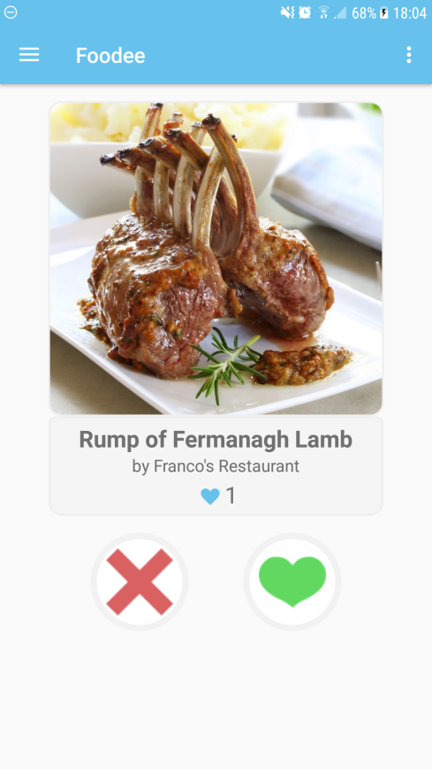
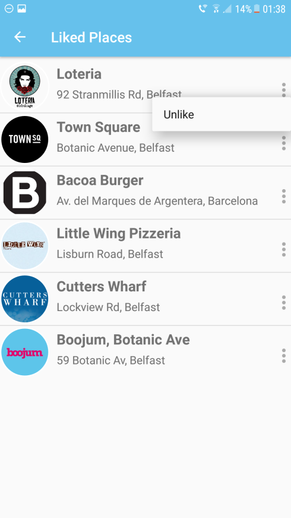

Foodee
Restaurant Discovery App for Android
During my final year of university I teamed up with 4 other students to create an Android application. This app allows users to quickly find nearby restaurants in a unique and novel way. This project reached the quarter finals of the InventNI 2017 competition. My role within the team was to create the 'Main Activity' where users could flick through dishes, as well as create another 'activity' where users could view/edit their Liked Restaurants. This project took a focus on writing database requests in PHP to retrieve relevant Restaurant information.


• Development using Java and XML on Android Studio.
• Writing PHP code allowing the application to query the database.
• Using SQL queries to retrieve restaurant data.
• Using Agile Methodology throughout development process.